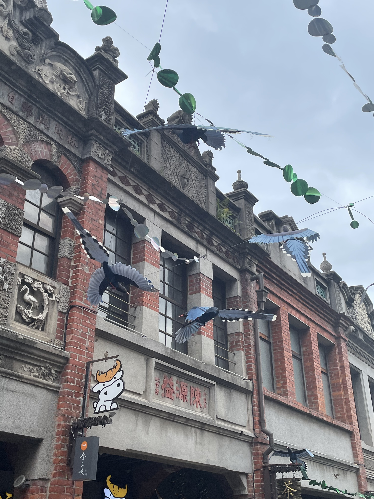
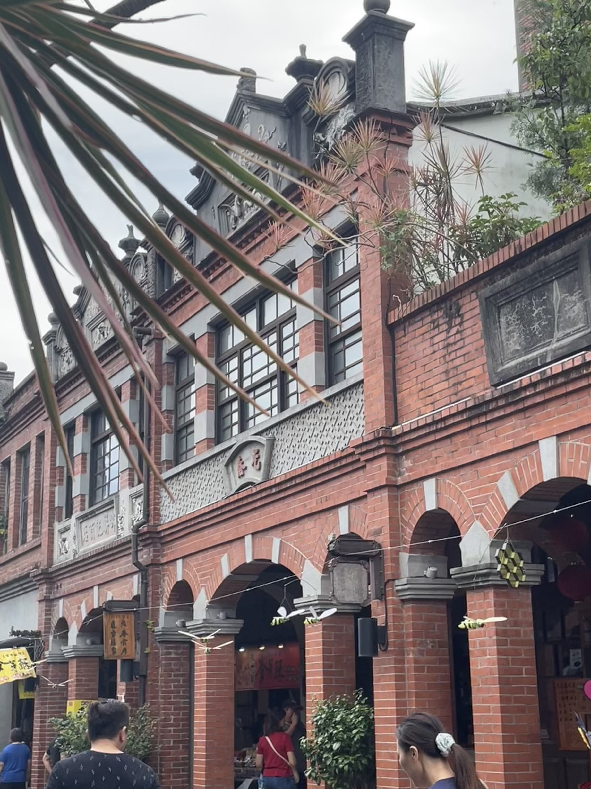
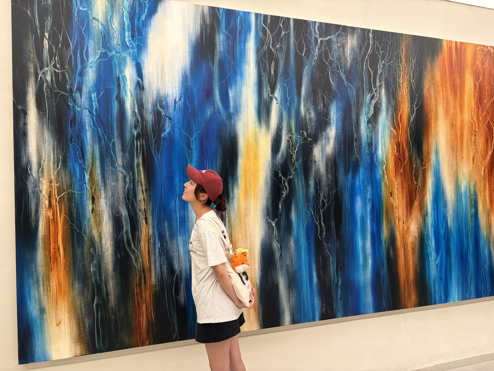
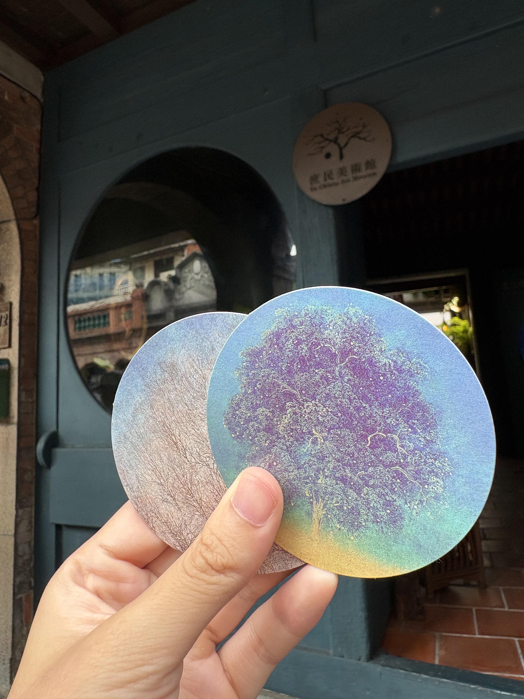
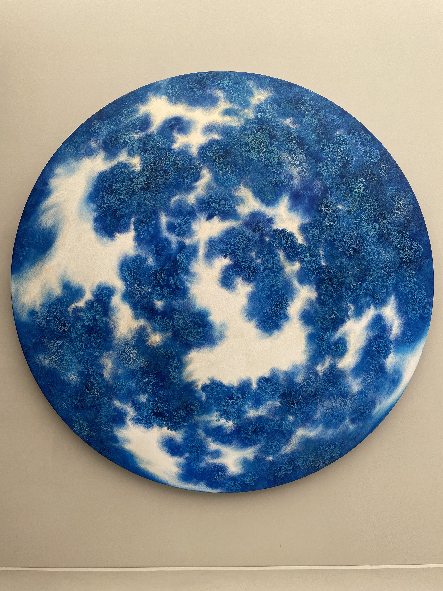
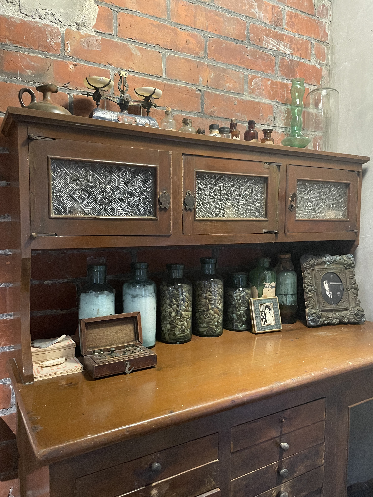
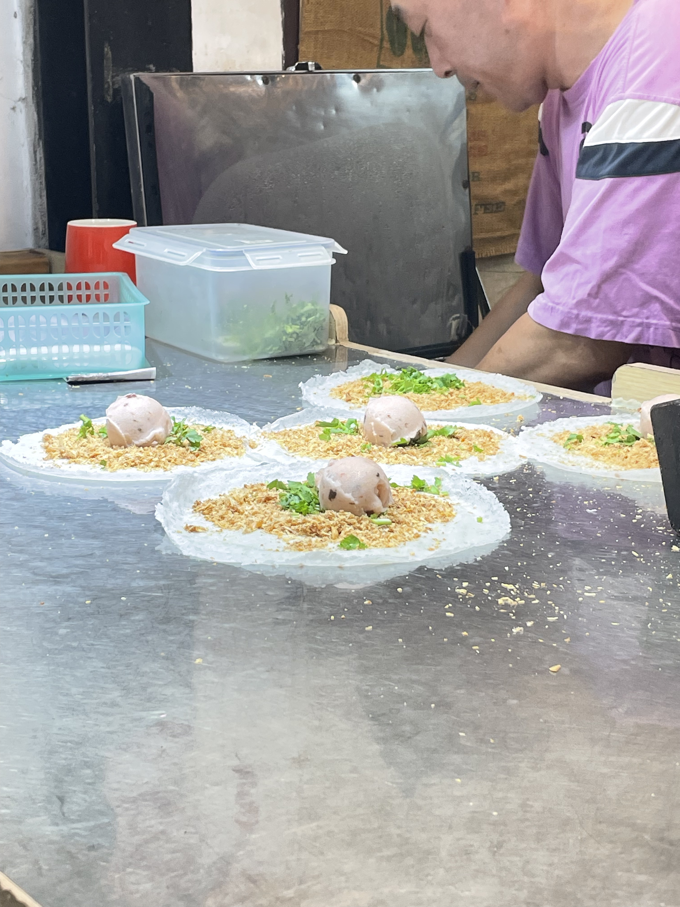
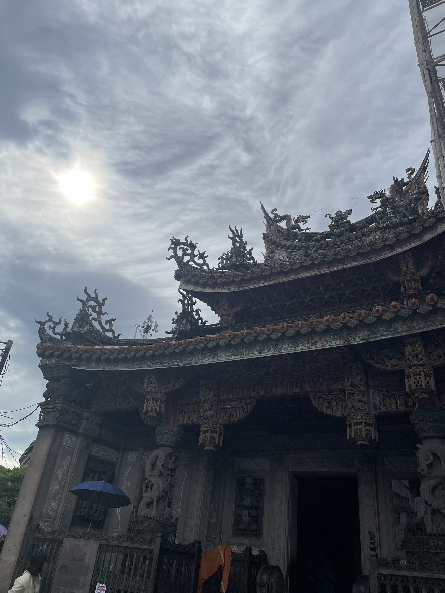

新北市三峽區
基本資訊
位於新北市西南側，群山環繞、河流交會，早期因大漢溪水運而發展成重要的商業與物資集散地。老街與傳統市街的形成，使三峽在清代與日治時期逐漸累積出深厚的地方文化與建築風貌，成為新北市具代表性的歷史城鎮之一。 隨著水運式微與都市擴張，三峽逐步轉型，保留歷史街區的同時，也發展出大學城與住宅區。自然山林、河岸景觀與人文聚落並存，使三峽在現代城市機能之外，仍維持濃厚的文化層次與生活溫度，呈現出新舊交織的城鎮樣貌。
推薦景點
| 三峽老街
是當地最具歷史與文化價值的街區。街道沿著大漢溪支流自然延伸，兩側保留大量清代至日治時期的傳統建築，屋脊多以燕尾脊與紅磚、木構為主，呈現閩南與巴洛克混合的特色街景。 老街自古以來就是商業與生活聚集地，早年作為農產品與布匹交易中心，至今仍保有傳統店家與小吃，販售草仔粿、鳳梨酥、麵食等在地美食。其中最具代表性的美食是三峽金牛角，外層酥脆、內餡飽滿，通常包有奶油、紅豆或花生餡，口感香甜而帶有層次，是遊客到三峽老街必嚐的小吃之一。金牛角不僅代表地方的傳統烘焙技藝，也與老街的歷史氛圍相互呼應，常常可以看到排隊購買的人潮，形成老街獨有的熱鬧景象，也承載著三峽老街文化與記憶的一部分。 街區中亦有陶藝工作室、文創店鋪與咖啡館，將傳統生活與現代觀光結合，使遊客能同時體驗歷史風貌與地方人情。整體而言，三峽老街是地方歷史的縮影，透過建築、商業與飲食，展現三峽從農業聚落到現代都市的文化延續與生活記憶。
| 庶民美術館
位於三峽老街附近，是一處以推廣在地藝術與民眾參與為核心的文化空間。美術館本身保留傳統建築特色，並結合現代展覽設計，使建築本身與展示內容相互呼應。館內展覽涵蓋繪畫、攝影、裝置藝術與手作創作，重視呈現在地文化、生活故事與居民創意，並鼓勵互動與體驗，使藝術更貼近民眾生活。 在三峽老街歷史街區的脈絡下，庶民美術館提供遊客一個深度感受地方文化的場域，將傳統街區的生活氣息與現代藝術教育結合，形成歷史、生活與藝術互相滲透的文化場景，使三峽的文化旅遊不僅停留在觀光，更能體驗在地創作與社群參與。







